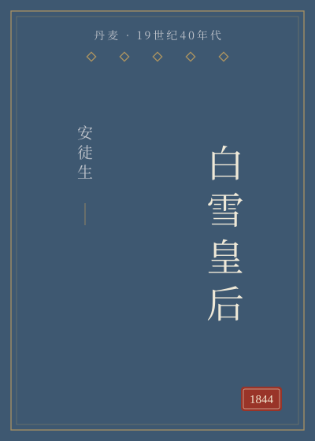
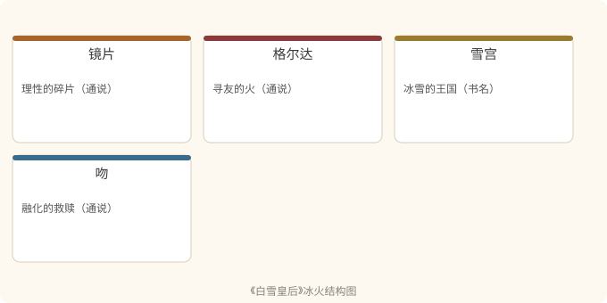

白雪皇后
一、基本信息
| 作者 | 安徒生 |
|---|---|
| 成书/出版 | 作者页注记：Britannica 语境——白雪皇后（发表年份通说待核——1844说） Hans Christian Andersen (Danish author) — Encyclopaedia Britannica（百科全书） |
| 国别/地区 | 丹麦 |
| 时代 | 近代 · 19世纪40年代 |
| 体裁 | 童话 |
| 语言 | 丹麦语 |

《白雪皇后》冰火结构图（主题·结构图）
二、创作背景
作者页注记：海的女儿、丑小鸭、白雪皇后——'（Britannica 语境）'。
Britannica：安徒生——童话作家（作者页语境）。
题材（通说待核）：镜子的碎片入心——格尔达雪原寻友。
三、内容脉络
（通说待核）卡伊被镜片与白雪皇后带走。
（通说待核）格尔达的冬季寻友与吻的融化。
四、主要人物表
| 人物 | 身份 | 说明 |
|---|---|---|
| 格尔达 | 寻友少女 | （通说待核） |
| 卡伊 | 被带走男孩 | （通说待核） |
| 白雪皇后 | 冰雪之宫主人 | （书名人物） |
五、主题与艺术特点
- '理性的冰'与'心的火'（通说待核）。
- 七段故事的旅程结构（通说待核）。
- 善的救赎（通说待核）。
六、影响与评论
- Britannica：安徒生童话序列（作者页注记）。
Hans Christian Andersen (Danish author) — Encyclopaedia Britannica（百科全书） - Britannica：安徒生为童话大师（作者页语境）。
Hans Christian Andersen (Danish author) — Encyclopaedia Britannica（百科全书）
七、阅读建议
难点
- 七个故事的结构（通说待核）。
- '镜子的碎片'寓意。
- 《白雪皇后》（人民文学出版社《安徒生童话全集》等——通说待核）。
- 丹麦文原版（公有领域）。
安徒生代表作；与《海的女儿》《丑小鸭》对读。
八、待核实
- 1844年发表（《新童话》第二集说）待核。
- 七段结构核对（通说）。
- '泰恩'等名词细节待核。